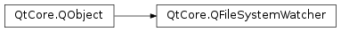

QFileSystemWatcher¶
Synopsis¶
Functions¶
- def
addPath(file) - def
addPaths(files) - def
directories() - def
files() - def
removePath(file) - def
removePaths(files)
Detailed Description¶
The
PySide2.QtCore.QFileSystemWatcherclass provides an interface for monitoring files and directories for modifications.
PySide2.QtCore.QFileSystemWatchermonitors the file system for changes to files and directories by watching a list of specified paths.Call
PySide2.QtCore.QFileSystemWatcher.addPath()to watch a particular file or directory. Multiple paths can be added using thePySide2.QtCore.QFileSystemWatcher.addPaths()function. Existing paths can be removed by using thePySide2.QtCore.QFileSystemWatcher.removePath()andPySide2.QtCore.QFileSystemWatcher.removePaths()functions.
PySide2.QtCore.QFileSystemWatcherexamines each path added to it. Files that have been added to thePySide2.QtCore.QFileSystemWatchercan be accessed using thePySide2.QtCore.QFileSystemWatcher.files()function, and directories using thePySide2.QtCore.QFileSystemWatcher.directories()function.The
fileChanged()signal is emitted when a file has been modified, renamed or removed from disk. Similarly, thedirectoryChanged()signal is emitted when a directory or its contents is modified or removed. Note thatPySide2.QtCore.QFileSystemWatcherstops monitoring files once they have been renamed or removed from disk, and directories once they have been removed from disk.See also
-
class
PySide2.QtCore.QFileSystemWatcher([parent=nullptr])¶ -
class
PySide2.QtCore.QFileSystemWatcher(paths[, parent=nullptr]) Parameters: - paths – list of strings
- parent –
PySide2.QtCore.QObject
Constructs a new file system watcher object with the given
parent.Constructs a new file system watcher object with the given
parentwhich monitors the specifiedpathslist.
-
PySide2.QtCore.QFileSystemWatcher.addPath(file)¶ Parameters: file – unicode Return type: PySide2.QtCore.boolAdds
pathto the file system watcher ifpathexists. The path is not added if it does not exist, or if it is already being monitored by the file system watcher.If
pathspecifies a directory, thedirectoryChanged()signal will be emitted whenpathis modified or removed from disk; otherwise thefileChanged()signal is emitted whenpathis modified, renamed or removed.If the watch was successful, true is returned.
Reasons for a watch failure are generally system-dependent, but may include the resource not existing, access failures, or the total watch count limit, if the platform has one.
Note
There may be a system dependent limit to the number of files and directories that can be monitored simultaneously. If this limit is been reached,
pathwill not be monitored, and false is returned.
-
PySide2.QtCore.QFileSystemWatcher.addPaths(files)¶ Parameters: files – list of strings Return type: list of strings Adds each path in
pathsto the file system watcher. Paths are not added if they not exist, or if they are already being monitored by the file system watcher.If a path specifies a directory, the
directoryChanged()signal will be emitted when the path is modified or removed from disk; otherwise thefileChanged()signal is emitted when the path is modified, renamed, or removed.The return value is a list of paths that could not be watched.
Reasons for a watch failure are generally system-dependent, but may include the resource not existing, access failures, or the total watch count limit, if the platform has one.
Note
There may be a system dependent limit to the number of files and directories that can be monitored simultaneously. If this limit has been reached, the excess
pathswill not be monitored, and they will be added to the returnedPySide2.QtCore.QStringList.
-
PySide2.QtCore.QFileSystemWatcher.directories()¶ Return type: list of strings Returns a list of paths to directories that are being watched.
-
PySide2.QtCore.QFileSystemWatcher.files()¶ Return type: list of strings Returns a list of paths to files that are being watched.
-
PySide2.QtCore.QFileSystemWatcher.removePath(file)¶ Parameters: file – unicode Return type: PySide2.QtCore.boolRemoves the specified
pathfrom the file system watcher.If the watch is successfully removed, true is returned.
Reasons for watch removal failing are generally system-dependent, but may be due to the path having already been deleted, for example.
-
PySide2.QtCore.QFileSystemWatcher.removePaths(files)¶ Parameters: files – list of strings Return type: list of strings Removes the specified
pathsfrom the file system watcher.The return value is a list of paths which were not able to be unwatched successfully.
Reasons for watch removal failing are generally system-dependent, but may be due to the path having already been deleted, for example.
© 2018 The Qt Company Ltd. Documentation contributions included herein are the copyrights of their respective owners. The documentation provided herein is licensed under the terms of the GNU Free Documentation License version 1.3 as published by the Free Software Foundation. Qt and respective logos are trademarks of The Qt Company Ltd. in Finland and/or other countries worldwide. All other trademarks are property of their respective owners.